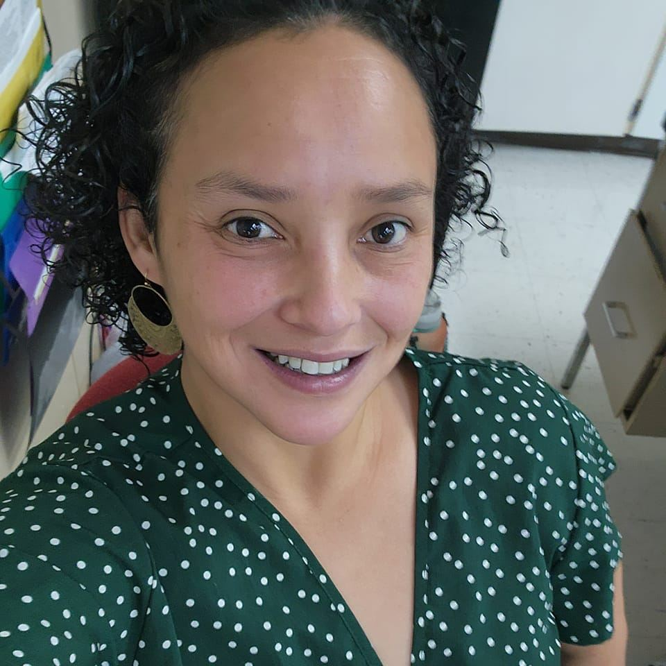

Alma Alicia Sanchez | WDD 130
My name is Alma Alicia Sanchez. I was born in Houston, Texas, raised in the San Francisco Bay Area and currently live in the Rio Grande Valley of Texas. I am a member of the Church of Jesus Christ of Latter Day Saints and have been brought up in the church. I am sealed and married to my husband and 2 energetic, loving children. I graduated from BYU-I with a bachelors degree in University Studies and a Minor in History. I also graduated from the University of Phoenix Online with a Masters degree in Psychology. Currently I am a 19th year ELAR middle school teacher and love it, but I'm getting tired. I have Multiple Sclerosis, a 24 year survivor, and for that reason I am going back to school to work in a field I can do from home and get paid a lot more money than what I'm making right now. I am looking forward to earning my Bachelors degree in Computer Programming.